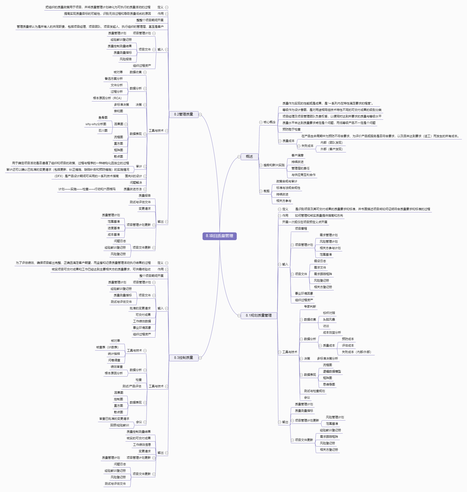

8.项目质量管理

概述
核心概念
质量作为实现的性能或是成果，是“一系列内在特性满足要求的程度”。
等级作为设计意图，是对用途相同但技术特性不同的可交付成果的级别分类
项目经理及项目管理团队负责权衡，以便同时达到所要求的质量与等级水平
质量水平未达到质量要求肯定是个问题，而低等级产品不一定是个问题
预防胜于检查
质量成本
在产品生命周期中为预防不符合要求、为评价产品或服务是否符合要求，以及因未达到要求（返工）而发生的所有成本。
失败成本
内部（团队发现）
外部（客户发现）
趋势和新兴实践
客户满意
持续改进
管理层的责任
与供应商互利合作
裁剪
政策合规与审计
标准与法规合规性
持续改进
相关方参与
8.1规划质量管理
定义
是识别项目及其可交付成果的质量要求和标准，并书面描述项目将如何证明符合质量要求和标准的过程
作用
如何管理和核实质量提供指南和方向
开展一次或仅在项目预定义点开展
输入
项目章程
项目管理计划
需求管理计划
风险管理计划
相关方参与计划
范围基准
项目文件
假设日志
需求文件
需求跟踪矩阵
风险登记册
相关方登记册
事业环境因素
组织过程资产
工具与技术
专家判断
数据收集
标杆对照
头脑风暴
访谈
数据分析
成本效益分析
质量成本
预防成本
评估成本
失败成本（内部/外部）
决策
多标准决策分析
数据表现
流程图
逻辑数据模型
矩阵图
思维导图
测试与检查规划
会议
输出
质量管理计划
质量测量指标
项目管理计划更新
风险管理计划
范围基准
项目文件更新
经验教训登记册
需求跟踪矩阵
风险登记册
相关方登记册
8.2管理质量
定义
把组织的质量政策用于项目，并将质量管理计划转化为可执行的质量活动的过程
作用
提高实现质量目标的可能性，识别无效过程和导致质量低劣的原因
整整个项目期间开展
管理质量被认为是所有人的共同职责，包括项目经理、项目团队、项目发起人、执行组织的管理层、甚至是客户
输入
项目管理计划
质量管理计划
项目文件
经验教训登记册
质量控制测量结果
质量测量指标
风险报告
组织过程资产
工具与技术
数据收集
核对单
数据分析
备选方案分析
文件分析
过程分析
根本原因分析（RCA）
决策
多标准决策
数据表现
亲和图
因果图
鱼骨图
why-why分析图
石川图
流程图
直方图
矩阵图
散点图
审计
用于确定项目活动是否遵循了组织和项目的政策、过程与程序的一种结构化且独立的过程
审计还可以确认已批准的变更请求（包括更新、纠正措施、缺陷补救和预防措施）的实施情况
面向X的设计
（DFX）是产品设计期间可采用的一系列技术指南
问题解决
质量改进方法
计划——实施——检查——行动和六西格玛
输出
质量报告
测试与评估文件
变更请求
项目管理计划更新
质量管理计划
范围基准
进度基准
成本基准
项目文件更新
问题日志
经验教训登记册
风险登记册
8.3控制质量
定义
为了评估绩效、确保项目输出完整、正确且满足客户期望，而监督和记录质量管理活动执行结果的过程
作用
核实项目可交付成果和工作已经达到主要相关方的质量要求，可供最终验收
整个项目期间开展
输入
项目管理计划
质量管理计划
项目文件
经验教训登记册
质量测量指标
测试与评估文件
批准的变更请求
可交付成果
工作绩效数据
事业环境因素
组织过程资产
工具与技术
工具与技术
核对单
核查表（计数表）
统计抽样
问卷调查
数据分析
绩效审查
根本原因分析
检查
测试/产品评估
数据表现
因果图
控制图
直方图
散点图
会议
审查已批准的变更请求
回顾/经验教训
输出
质量控制测量结果
核实的可交付成果
工作绩效信息
变更请求
项目管理计划更新
质量管理计划
项目文件更新
问题日志
经验教训登记册
风险登记册
测试与评估文件
{kind=link}